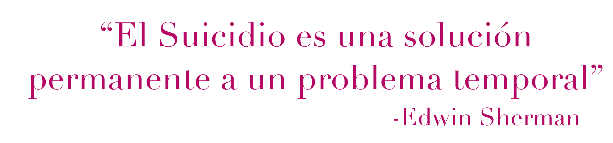

Un lugar seguro. Un lugar para ti.
Bienvenido a Un Día a la Vez,
En un mundo que avanza a gran velocidad, cuidar de nuestra salud mental es más importante que nunca. Este espacio ha sido creado para acompañarte, informarte y apoyarte en la prevención de la depresión y la ansiedad. Aquí encontrarás recursos confiables, herramientas prácticas y orientación emocional para fortalecer tu bienestar día a día. No necesitas estar en crisis para buscar ayuda. La prevención comienza con pequeños pasos: aprender a reconocer nuestras emociones, hablar de lo que sentimos y construir hábitos que nutran nuestra mente y corazón.
Estás en un lugar seguro. Estás en un lugar para ti.
Por Hands-On Meditation en YouTube
Si está considerando el suicidio o la autolesión, puedes contactar:
| Servicio | Contacto | Detalles |
|---|---|---|
| Línea PAS | 1-800-981-0023 | Asistencia emocional y psicológica |
| Línea de manejo de crisis internacional | 988 | Disponible en EE.UU. para crisis emocionales o suicidio |
| Chatear | lineapas.assmca.pr.gov | Disponible 24/7, gratis y confidencial |
| Personas con problemas de audición o sordera | 787-615-4112 (VRS) | Lenguaje de señas para personas sordas |
Recuerda que cualquiera que sea la situación, no estás solo y siempre hay salida, que aunque sea difícil mañana es un nuevo día para comenzar de nuevo. Más importante de todo, ten siempre en mente que:
La ansiedad es un sentimiento de miedo, temor e inquietud a algo que no ha pasado. Es una reacción normal al estrés, que todo el mundo experimenta, es tu cuerpo preparándote para escapar, iniciando la respuesta de lucha o huída.
Cuando la ansiedad se vuelve constante y empieza a afectar el día a día de las personas, se conoce como Trastorno de Ansiedad.
Los trastornos de ansiedad no tienen causa específica pero la genética, biología, química del cerebro, la personalidad, eventos traumáticos, o ambiente pueden ser causantes o exacerbar la condición. El consumo de sustancias también puede inducir ansiedad este es conocido como: Trastorno de Ansiedad Inducido por Sustancias.
Las personas sufren de ataques de pánico que son repentinos y repetidos momentos de miedo intenso sin haber un peligro aparente, que tienden a durar varios minutos.
Las personas con fobias tienen un miedo intenso a algo que representa poco o ningún peligro real.
Ansiedad al encontrarse en lugares o situaciones donde escapar puede resultar difícil, o donde no se dispone de ayuda.
Temor persistente que empieza ante una o más situaciones sociales en las que la persona se siente evaluada o expuesta a desconocidos.
Temor que es excesivo o irracional, desencadenado por la presencia, anticipación de un objeto o situación específicos.
Se recomienda que un adulto duarma minimo 8 horas. Si tienes problemas para dormir hable con su medico
Está bien ser indulgente y comer comida chatarra de vez en cuando, pero no se debe hacer rutina.Lo que comes afecta tu salud física, mental y emocional.
No solo porque se pueden mezclar con los medicamentos y eso es peligroso, si no que, estas sustancia también pueden ser causantes de ansiedad.
Acepta sus emociones y dale las gracias por compartirlas contigo.
puede ser que tengas la mejor intención, pero lo único que esto va a lograr es que tu ser querido piense que es una carga. Lo mejor que puedes hacer es dejarle saber que está ahí, cuando te necesite.
Si notas quetu ser querido está en un momento de ansiedad, no lo digas a otras personas. Pero si dejale saber, que sabes lo que esta sucediendo. Así su ser querido sabrá que usted es de confiar,que puede contar contigo que no es necesario ocultar que está nervioso.
S Si vas a llegar tarde trata de enviarle un mensaje explicándolo, o si no puedes contestar un mensaje por lo menos dale un reacción. Recuerda que algunas personas con ansiedad tienden a catastrofizar y pueden pensar que estás molesto o que dijeron algo incorrecto.
Es maravilloso que quieras cuidar de tu ser querido pero también tienes que velar por ti. Si piden mas de lo que puedas dar, dejaselo saber delicadamente.
La depresión se puede describir como el hecho de sentirse triste, melancólico, infeliz, abatido o derrumbado. Todo el mundo se siente así por periodos cortos, pero si se convierte en algo que te impide seguir tu dia a dia por mas de 2 semanas, lo mas probable es que sufras de alguno de los trastornos de depresión:
Es el más común de los trastornos se llama Trastorno Depresivo Mayor(TDM), y en el que concentra la mayor cantidad de los síntomas de depresión.
Hay diferentes motivos por el que una persona pueda desarrollar depresión, al igual que la ansiedad algunas causas problables serían: genética, biología, química del cerebro, la personalidad, eventos traumáticos, o ambiente pueden ser causantes o exacerbar la condición.
La distimia es más leve que la depresión, pero tiene una duración más larga comparada con con Trastorno depresivo mayor y comparte sintomas con el mismo.
La depresión atípica comparte muchos síntomas con TDM, pero difiere en algunas cosas.
Está relacionado con los cambios estacionales, especialmente con los meses de otoño e invernales, donde la luz solar disminuye.
Se entiende que afecta el reloj biológico interno (ritmo circadiano), los niveles de serotonina (neurotransmisor que influye en el estado de ánimo) y la melatonina (hormona que regula el sueño), lo que puede provocar síntomas depresivos
Sé honesto y sincero contigo mismo y con tu profesional de la salud. El profesional no puede ayudarte si no eres honesto, no sientas vergüenza por cómo te sientes ni lo que te está pasando. Recuerda que nadie te va a juzgar y que no eres el único con esta situación.
No es bueno si pierdes toda esperanza y fe, a si que por más difícil que sea trata de ver el vaso medio lleno. Poco a poco, verás cómo los pensamientos positivos reemplazarán los negativos.
Cuando uno hace ejercicio se liberan endorfinas que ayudan a mejorar el estado de ánimo.
Es fácil alejarse de las personas cuando no te sientes bien, pero el salir y compartir con otros puede mejorar tu estado de ánimo y ayudar a promover buenos pensamientos.
Es cierto que estos te traerán paz y felicidad, pero estos son solamente momentáneos, una vez el efecto se vaya, la sensación de tristeza y vacio regresaran, es una pendiente resbaladiza por la que no vale la pena caer.
Sigue las recomendaciones del profesional de la salud al que vaya. Si toma medicamentos sea consistente, no tome más de la dosis recomendada para usted, siga las instrucciones de su médico y no deje de tomarlas sin consultar con el profesional.
A veces, lo más valioso que puedes ofrecer es tu presencia. Escucha con atención, sin interrumpir ni minimizar lo que siente. Frases como “no es para tanto” pueden hacer más daño que bien.
Puedes tener la mejor intención, pero a veces solo se busca el oído no la boca. Si te solicitan consejos ahí se ofrecen. Tampoco compares experiencias de otros con la de tu ser querido, todo el mundo es diferente.
SLa recuperación no es lineal. Habrá días buenos y otros no tanto. Tu constancia puede ser un gran sostén.
Estar disponible no significa invadir. A veces, lo que más necesita es saber que estás cerca, aunque no diga nada.
Acompañar a alguien con depresión puede ser emocionalmente exigente. No descuides tu salud mental. Busca apoyo si lo necesitas.
Recuérdale que no está solo y que aunque ahora todo parezca oscuro, va por el camino hacia la recuperación.
¡Hola! Mi nombre es Noemí, tengo 17 años y estoy en mi segundo año de universidad haciendo un bachillerato en psicología con salud mental en la UPR.
Mi misión con este proyecto es educar a las personas sobre las enfermedades mentales que afectan a gran parte de la población. Espero que con esto
a las personas se les pueda hacer un poco más fácil buscar ayuda y que puedan sanar, un día a la vez. :D
Noe fuera.
Subscríbete si deseas recibir nuestras notificaciones: